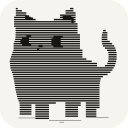
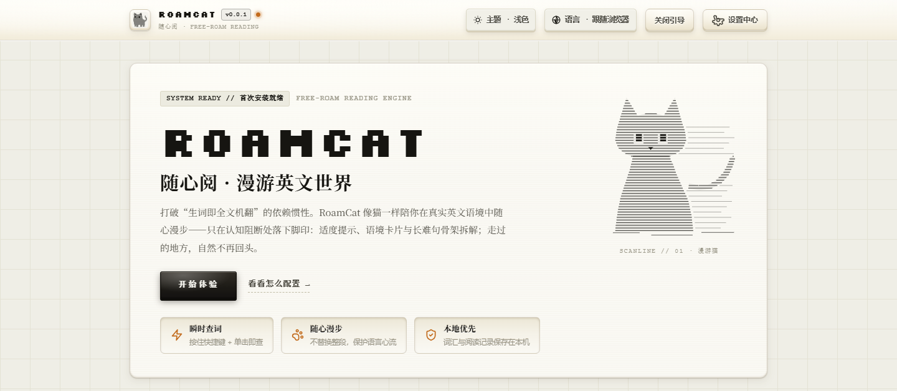
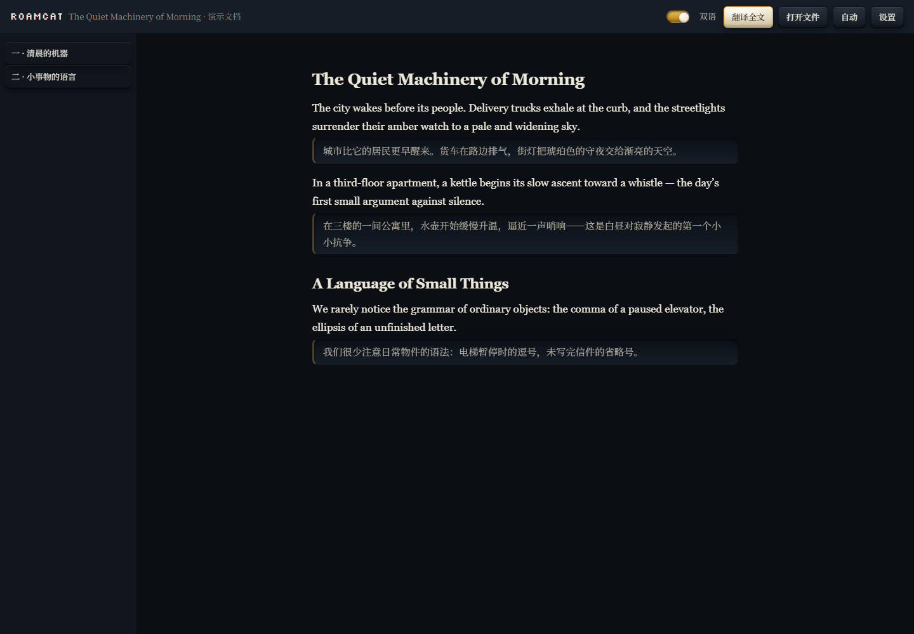
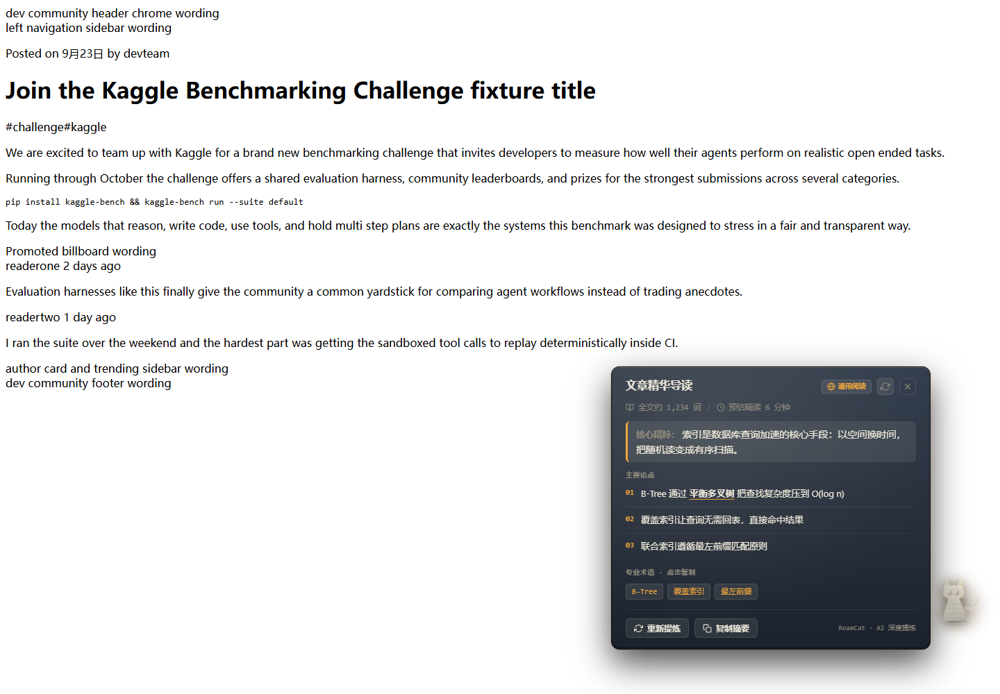
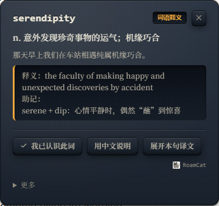

RoamCat · 随心阅双模式英文阅读扩展（Chrome / Edge）——要对照就双语，不要就稀疏提示。免费、开源（MPL-2.0）、本地优先。
0.0.1 预发布版——开发者模式加载；Chrome Web Store / Edge Add-ons 上架进行中。
按页面、按心情选——共用同一套翻译与分析引擎。
页面英文原位译成中英对照，随阅读位置推进，不后台预译整篇。导航、表格、卡片原位对应；「返回英文」只移除扩展插入物，不回滚站点更新。
保留真实英文：难点词稀疏提示随读渐退；按住 D + 单击出查词卡片；划词选段按需救援；长难句画解构下划线，主谓宾一目了然。
趴在页边的 Shadow DOM 小伙伴——阅读开关、文章摘要、设置与快捷键入口；可拖拽贴边，每页一只，未启用时完全不注入。
打开 PDF / EPUB 文件或粘贴文章，共用同一套双语引擎——「翻译全文」按你的阅读位置逐段生成中文对照。
站点档案覆盖 GitHub、Reddit、Hacker News、Stack Exchange、Discourse、dev.to、Lobsters——代码区、diff、投票构件不进阅读块。




AI 能力来自你选的服务，而不是被绑定的厂商。
28 家服务商、8 种协议——OpenAI、DeepSeek、Gemini、Anthropic、xAI、OpenRouter、Ollama、阿里云、火山、Kimi、阶跃等。结构化输出能力先探测后降级。
本机 Native Messaging 复用官方 CLI 权益——Codex CLI（ChatGPT 订阅）、Grok CLI（SuperGrok / X Premium+）、Antigravity agy（Google AI Pro / Ultra），免 API Key。
内置 Xenova/all-MiniLM-L6-v2 在离屏文档中做页面领域识别——全程离线，无需下载。
chrome.storage.local——不进内容脚本、诊断日志或连接器。诚实的定位说明——RoamCat 不打算在所有人手里替代谁。
| RoamCat | 沉浸式翻译 | Relingo | 彩云小译 | |
|---|---|---|---|---|
| 思路 | 双语对照或保留原文为主的稀疏辅助 | 整页双语翻译 | 按词频分级高亮 | 整页与划词翻译 |
| 开源 | ✅ MPL-2.0 | ❌ 闭源 | ❌ 闭源 | ❌ 闭源 |
| 模型来源 | 28 家自备 API、本地模型，或复用已有 AI 订阅 | 内置服务 + 部分 AI 可自备 Key | 内置 | 内置 |
| 费用 | 免费 | 订阅制免费额度 | 订阅制 | 订阅制 |
| 平台 | Chrome / Edge 125+ | Chrome、Edge、Firefox、Safari、移动端 | Chrome、Edge | Chrome、Edge、App |
想要最省心、平台最全的整页翻译，沉浸式翻译更成熟。想让英文原文始终主导、想要可审计的开源代码、或想复用已有的 AI 订阅而非再买一个——选 RoamCat。开源邻居：kiss-translator、openai-translator。RoamCat 是 RelyLess 的重构延续。
不收——MPL-2.0 开源，无账户、无付费档、无遥测。只有你自己选择接入付费 API 时才需要向该服务商付费。
项目没有自有服务器。阅读记录默认关闭、按站授权；页面文本只在你主动调用模型功能时离开本机，且直达你配置的服务商，不经任何中转。
桌面端 Chrome 与 Edge 125+（Manifest V3）。暂不支持 Firefox 与 Safari。
能——双语翻译模式按阅读位置逐段插入中文对照。阅读辅助模式则保持整页英文，只给随读渐退的稀疏提示。
支持——内置阅读器可打开本地 PDF / EPUB 或粘贴的文章，共用同一套双语引擎。
28 家自备 API（OpenAI、DeepSeek、Gemini、Anthropic、xAI、OpenRouter、Ollama、阿里云、火山、Kimi、阶跃……）、内置本地领域识别模型，或经本机连接器复用已登录的 ChatGPT / Grok / Antigravity CLI 订阅——免 API Key。
到 Releases 下载 roamcat-0.0.1-extension.zip 并解压。
打开 chrome://extensions，开启开发者模式，「加载已解压的扩展」，选择解压出的 extension 目录。
在任意英文页面点工具栏图标——或按 Alt+Shift+T 双语翻译。模型来源在「设置」里配置。